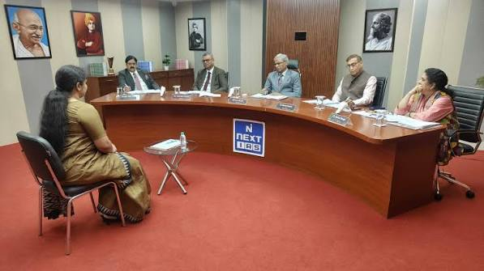

The UPSC Personality Test is the final stage of the Civil Services Examination. It is designed to assess your personality, judgment, communication skills, leadership qualities, emotional intelligence, integrity and suitability for a career in public administration.

The Personality Test is the third and final stage of the UPSC Civil Services Examination. Candidates who qualify the Main Examination are invited to appear before an Interview Board constituted by the Union Public Service Commission.
The interview is not merely a test of academic knowledge. Instead, it evaluates the overall personality of the candidate, including mental alertness, social awareness, communication ability, ethical values, leadership qualities and decision-making skills.
The Personality Test carries 275 marks, and these marks are added to the Main Examination marks to prepare the final merit list.
During the interview, the board observes your personality traits, confidence, communication style and ability to think logically under pressure.
| Assessment Area | Description |
|---|---|
| Personality | Confidence, maturity and positive attitude. |
| Communication | Ability to express ideas clearly and politely. |
| Decision Making | Logical and balanced decision-making ability. |
| Leadership | Administrative aptitude and leadership qualities. |
| Ethics & Integrity | Honesty, moral values and public service attitude. |
| Awareness | Knowledge of current national and international issues. |
Candidates should communicate confidently, clearly and respectfully. The board values clarity of thought rather than the use of complex vocabulary.
Situational questions are often asked to evaluate your analytical thinking, problem-solving skills and balanced judgment.
Ethical dilemmas are used to understand your integrity, honesty, empathy and commitment to constitutional values.
Future civil servants should demonstrate initiative, teamwork, responsibility and the ability to inspire confidence.
Candidates are expected to remain calm, composed and thoughtful while responding to unexpected or challenging questions.
The Detailed Application Form (DAF) is one of the most important documents in the UPSC Personality Test. Most interview questions are directly or indirectly based on the information you provide in your DAF.
Every detail such as your educational background, hobbies, achievements, home district, optional subject, work experience, and extracurricular activities may become the basis of discussion during the interview.
The Interview Board expects candidates to know every detail mentioned in their DAF. Never mention anything that you cannot explain confidently.
Below are some common questions frequently asked by the UPSC Interview Board. Click on each question to view the guidance.
Introduce yourself briefly by mentioning your education, hometown, professional background, interests and your motivation for joining the Civil Services.
Focus on public service, leadership, governance, problem-solving and your commitment towards nation building instead of personal benefits.
Explain your genuine interest in the subject, academic background or career relevance honestly.
Be prepared with the history, geography, economy, culture, famous personalities and current issues related to your hometown.
Follow this structured roadmap before appearing for the Personality Test.
Start reading newspapers regularly and revise current affairs.
Revise graduation subjects, optional subject and DAF.
Attend mock interviews and improve communication skills.
Practice frequently asked interview questions and revise government schemes.
Stay calm, dress professionally, remain confident and answer honestly.
Your appearance creates the first impression before the interview begins. A neat, clean and professional dress reflects discipline, confidence and respect towards the Interview Board.
Wear a light-colored formal shirt with dark formal trousers. A blazer and tie are optional but recommended during winter. Shoes should be polished, and accessories should be minimal.
Wear a simple saree, salwar suit or formal western attire with minimal accessories. Choose comfortable footwear and maintain a professional appearance throughout the interview.
The following resources help improve confidence, communication skills and awareness before the Personality Test.
| Resource | Purpose |
|---|---|
| Mock Interviews | Improve confidence and body language. |
| Daily Newspaper | Current Affairs & Editorial Analysis. |
| Government Reports | Policy understanding and governance. |
| Yojana & Kurukshetra | Social and developmental issues. |
| Previous Interview Transcripts | Understand question patterns. |
Click the button below to generate a random UPSC interview question and practice answering it confidently.
"Knowledge helps you qualify the examination, but personality, integrity and balanced judgment help you become a Civil Servant."
Explore interview tips, revise your DAF thoroughly and practice answering questions with confidence.